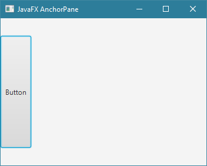
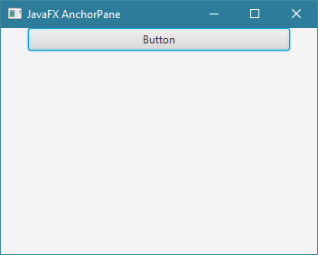
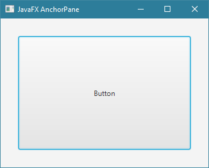
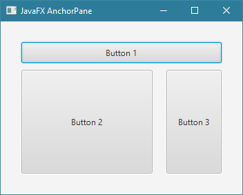

JavaFXالكلاس AnchorPane
مقدمة
الكلاس AnchorPane يستخدم لإنشاء حاوية لا تترتب فيها الأشياء بشكل تلقائي, و بالتالي أنت من تتولى تحديد أماكن الأشياء التي تضيفها فيها.
كل شيء تضيفه في هذه الحاوية, يمكن تحديد حجم الفراغ بينه و بين الحاوية ( أي بعده عنها ) من الجهات الأربعة ( الأعلى, الأسفل, اليمين, اليسار ).
إنتبه: يمكنك تحديد حجم الفراغ بين الشيء الذي تضيفه و بين الحاوية نفسها. و ليس حجم الفراغ بين الأشياء التي وضعتها في الحاوية.
أيضاً, حجم الفراغ الذي تضيفه يؤثر على حجم الشيء نفسه, فمثلاً:
بمجرد تحديد حجم المسافة الفارغة بين أي شيء تضيفه و بين الحاوية من الأعلى و الأسفل فإنه سيظهر على كل المسافة المتوفرة بالطول.
و بمجرد تحديد حجم المسافة الفارغة بين أي شيء تضيفه و بين الحاوية من اليمين و اليسار فإنه سيظهر على كل المسافة المتوفرة بالعرض.
لذلك عليك تقدير أحجام المسافات الفارغة التي ستضعها لكل شيء لتحدد أمكان الأشياء التي أضفتها و لجعلها لا تظهر فوق بعضها البعض.
إذاً, فكرة هذه الحاوية هي جعل الأشياء التي نضيفها فيها تظهر على كل المساحة المتوفرة ما عدا المساحات الفارغة التي نقوم بتحديدها لكل شيء على حدا.
معلومة تقنية
إفتراضياً, في حال قمت بإنشاء كائن الـ AnchorPane و أضفت فيه بعض الأشياء بدون تحديد حجم المسافات الفارغة بينه و بين هذه الأشياء. فإنهم سيظهروا جميعاً فوق بعضهم في الأعلى من جهة اليسار. و طبعاً آخر شيء تضيفه يظهر في الأعلى.
بناء الكلاس AnchorPane
@DefaultProperty(value="children")
public class AnchorPane
extends Region
كونستركتورات الكلاس AnchorPane
الجدول التالي يحتوي على كونستركتورات الكلاس AnchorPane.
| الكونستركتور مع تعريفه |
AnchorPane()
ينشئ كائن من الكلاس AnchorPane يمثل حاوية فارغة. |
AnchorPane(Node... children)
ينشئ كائن من الكلاس AnchorPane يمثل حاوية مع تحديد الأشياء التي نريد وضعها فيها.
مكان الباراميتر children نمرر الأشياء التي نريد وضعها فيها مع وضع فاصلة بين كل شيئين. |
دوال الكلاس AnchorPane
الجدول التالي يحتوي على دوال الكلاس AnchorPane الأكثر إستخداماً.
| الدالة مع تعريفها |
public static void setTopAnchor(Node child, Double value)
تستخدم لتحديد كم يبعد الشيء الموضوع في AnchorPane عنه من الأعلى.
مكان الباراميتر child نمرر الشيء الذي نريد إبعاده من الجهة العلوية عن كائن الـ AnchorPane.
مكان الباراميتر value نمرر رقم نوعه Double يمثل كم سيتم إبعاد الشيء من الأعلى عن كائن الـ AnchorPane الموضوع فيه. |
public static void setBottomAnchor(Node child, Double value)
تستخدم لتحديد كم يبعد الشيء الموضوع في AnchorPane عنه من الأسفل.
مكان الباراميتر child نمرر الشيء الذي نريد إبعاده من الجهة السفلية عن كائن الـ AnchorPane.
مكان الباراميتر value نمرر رقم نوعه Double يمثل كم سيتم إبعاد الشيء من الأسفل عن كائن الـ AnchorPane الموضوع فيه. |
public static void setRightAnchor(Node child, Double value)
تستخدم لتحديد كم يبعد الشيء الموضوع في AnchorPane عنه من الجهة اليمنى.
مكان الباراميتر child نمرر الشيء الذي نريد تحديد كم يبعد عن يمين كائن الـ AnchorPane.
مكان الباراميتر value نمرر رقم نوعه Double يمثل كم سيتم إبعاد الشيء من الجهة اليمنى عن كائن الـ AnchorPane الموضوع فيه. |
public static void setLeftAnchor(Node child, Double value)
تستخدم لتحديد كم يبعد الشيء الموضوع في AnchorPane عنه من الجهة اليسرى.
مكان الباراميتر child نمرر الشيء الذي نريد تحديد كم يبعد عن يسار كائن الـ AnchorPane.
مكان الباراميتر value نمرر رقم نوعه Double يمثل كم سيتم إبعاد الشيء من الجهة اليسرى عن كائن الـ AnchorPane الموضوع فيه. |
public void setPrefSize(double prefWidth, double prefHeight)
تستخدم لتحديد حجم كائن الـ AnchorPane الذي قام باستدعائها.
|
public final void setTranslateX(double value)
تستخدم لتحديد مكان كائن الـ AnchorPane الذي قام باستدعائها أفقياً.
مكان الباراميتر value نضع رقم يمثل كم Pixel سيتم إزاحته من اليسار إلى اليمين. |
public final void setTranslateY(double value)
تستخدم لتحديد مكان كائن الـ AnchorPane الذي قام باستدعائها عامودياً.
مكان الباراميتر value نضع رقم يمثل كم Pixel سيتم إزاحته من الأعلى إلى الأسفل. |
public final void setBackground(Background value)
تستخدم لوضع لون أو صورة كخلفية لكائن الـ AnchorPane الذي قام بإستدعائها.
مكان الباراميتر value نضع كائن من الكلاس Background يشير إلى درجة اللون أو الصورة التي سيتم وضعها كخلفية. |
public final void setStyle(String value)
تستخدم لتعديل تصميم كائن الـ AnchorPane الذي قام بإستدعائها.
مكان الباراميتر value يمكنك تمرير إسم و قيمة أي خاصية تريد تعديلها في كائن الـ AnchorPane بأسلوب لغة CSS لإظهاره بالشكل الذي تريده. |
public ObservableList<Node> getChildren()
ترجع كائن نوعه ObservableList يمثل محتوى كائن الـ AnchorPane الذي قام بإستدعائها مما يجعلك قادراً على إضافة كائنات جديدة أو حذف كائنات موجودة فيه. |
أمثلة شاملة
المثال الأول
المثال التالي يعلمك طريقة تحديد طول و مكان ظهور الشيء الذي يتم إضافته في AnchorPane.
ملاحظة: هنا جعلنا حجم الفراغ بين الـ Button و الـ AnchorPane من الأعلى و من الأسفل بمقدار 30 بيكسل.
لهذا السبب يظهر على طول النافذة و لكنه يحافظ على الفراغ الموجود من الأعلى و الأسفل.

شاهد المثال »
المثال الثاني
المثال التالي يعلمك طريقة تحديد عرض و مكان ظهور الشيء الذي يتم إضافته في AnchorPane.
ملاحظة: هنا جعلنا حجم الفراغ بين الـ Button و الـ AnchorPane من اليمين و من اليسار بمقدار 30 بيكسل.
لهذا السبب يظهر على عرض النافذة و لكنه يحافظ على الفراغ الموجود من اليمين و اليسار.

شاهد المثال »
المثال الثالث
المثال التالي يعلمك طريقة تحديد حجم و مكان ظهور الشيء الذي يتم إضافته في AnchorPane.
ملاحظة: هنا قمنا بتحديد حجم الفراغ بين الـ Button و الـ AnchorPane من جميع الجوانب بمقدار 30 بيكسل.
لهذا السبب يظهر على عرض و طول النافذة و لكنه يحافظ على الفراغ الموجود من الأعلى, الأسفل, اليمين و اليسار.

شاهد المثال »
المثال الرابع
المثال التالي يعلمك طريقة وضع أكثر من شيء في AnchorPane.
ملاحظة: هنا قمنا بتحديد حجم الفراغ بين كل Button و بين الـ AnchorPane من جميع الجوانب بالإضافة إلى تحديد حجمهم المفضل كالتالي:
Button1 يتأثر بعرض الـ AnchorPane فقط.
Button2 يتأثر بعرض و طول الـ AnchorPane.
Button3 يتأثر بطول الـ AnchorPane فقط.

شاهد المثال »

 محرر الويب
محرر الويب نظام الألوان
نظام الألوان محول الوحدات
محول الوحدات محلل عناوين الشبكات
محلل عناوين الشبكات